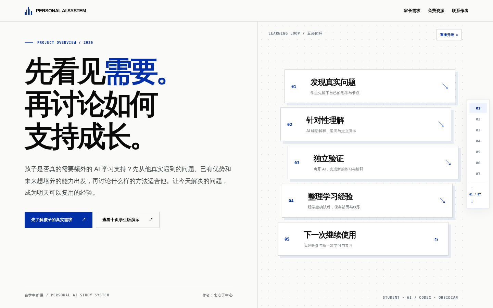
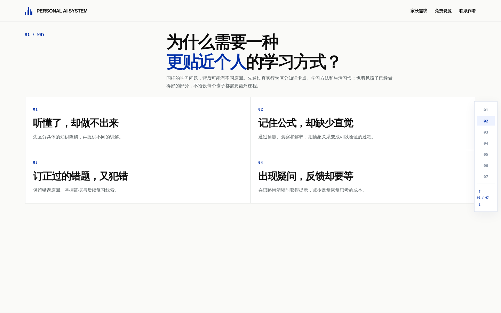
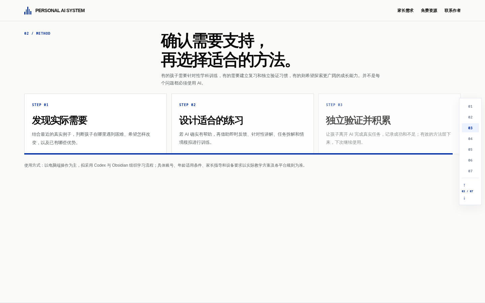
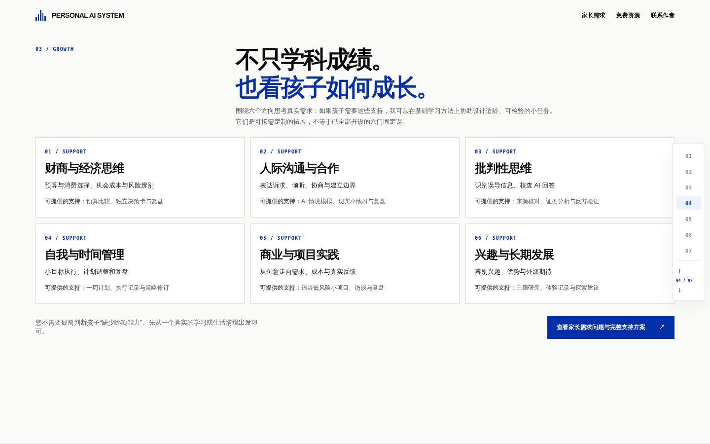
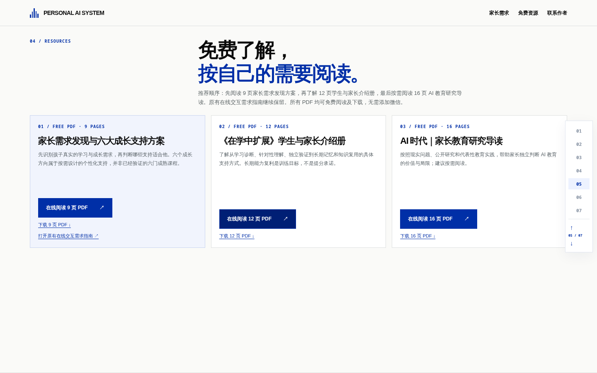
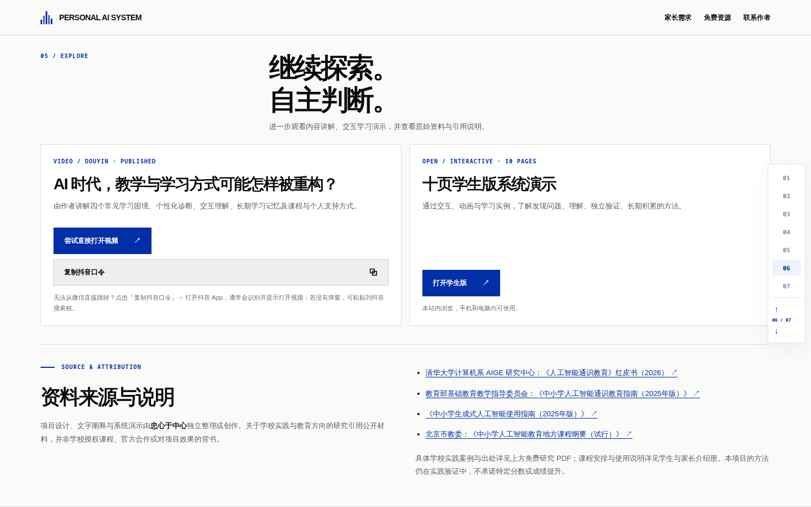
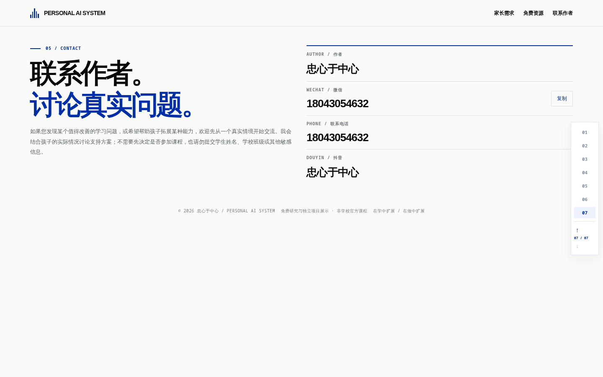

01 / INTRO
从第一页连续看到第七页：每次上下滚动直接切换并准确对齐下一页，不停留在两页中间。原项目介绍被整理成七页，包括学习问题、学习方法、成长支持、全部免费资源以及联系信息。
进入真实首页，体验滚轮与动画真实浏览器录屏，包含首页开场、每次滚轮翻页与每页的大尺度叙事动效。可以拖动进度条或暂停比较布局。
以下是实测屏幕截图，静态画面主要用于检查排版。动效节奏请观看上方视频。






